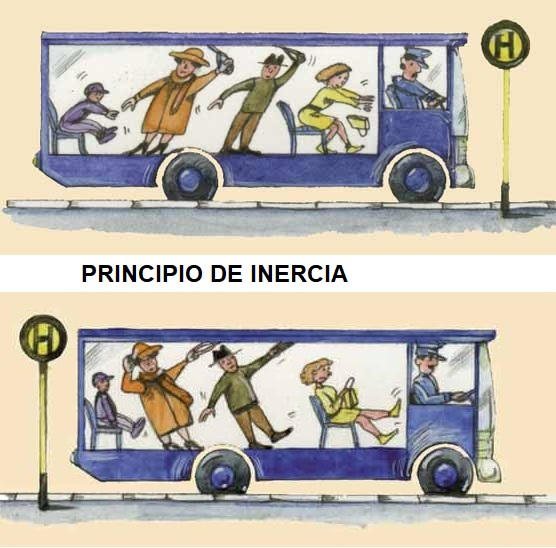
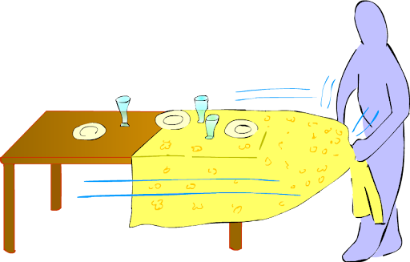
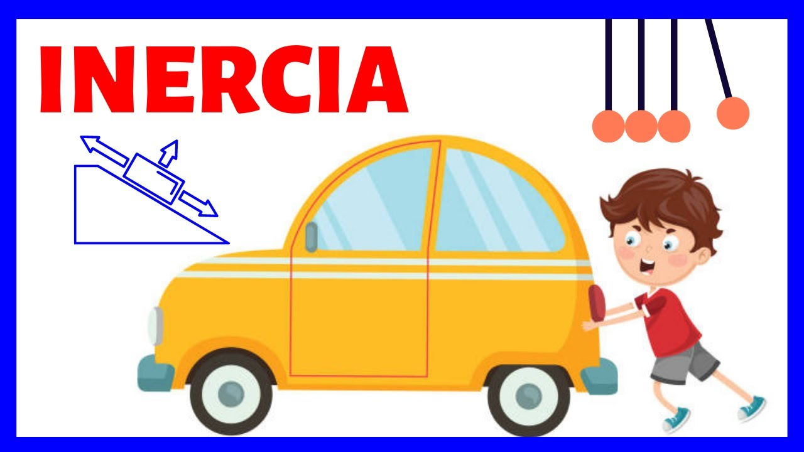

Inercia
Definición
La inercia es la propiedad que tienen los objetos de resistir cambios en su estado de movimiento. En otras palabras, un objeto en reposo tiende a permanecer en reposo, y un objeto en movimiento tiende a seguir moviéndose en línea recta y a velocidad constante, a menos que una fuerza externa actúe sobre él.
La inercia es la razón por la cual, por ejemplo, cuando un coche frena repentinamente, tu cuerpo tiende a seguir moviéndose hacia adelante. Esto se debe a que tu cuerpo quiere continuar en movimiento a la misma velocidad a la que se desplazaba el coche, debido a la inercia.
La cantidad de inercia que tiene un objeto está directamente relacionada con su masa: cuanto más masivo es un objeto, más difícil es cambiar su estado de movimiento, ya sea ponerlo en marcha, detenerlo o cambiar su dirección. Por eso, es más fácil empujar una pelota de fútbol que un coche, porque la pelota tiene mucha menos masa y, por lo tanto, menos inercia.
En resumen, la inercia es lo que mantiene a los objetos en su estado actual de movimiento hasta que una fuerza externa los obliga a cambiar.
Ejemplos prácticos:
-
Frenado brusco en un auto:
Cuando estás en un coche que frena repentinamente, sientes que tu cuerpo sigue moviéndose hacia adelante, incluso cuando el coche ya se ha detenido. Esto ocurre porque, debido a la inercia, tu cuerpo tiende a mantener su estado de movimiento a la velocidad que tenía antes de que el coche frenara. Es por eso que usamos cinturones de seguridad, para evitar que la inercia nos haga seguir moviéndonos hacia adelante en caso de un frenado repentino.
 -
Sacar un mantel sin mover los objetos encima:
En el truco del mantel, si tiras de él rápidamente, los objetos que están sobre la mesa (platos, cubiertos, etc.) tienden a quedarse en su lugar. Esto se debe a la inercia, que resiste el cambio en el estado de reposo de los objetos. Si el mantel se mueve lo suficientemente rápido, la fricción entre el mantel y los objetos no es suficiente para moverlos, y ellos permanecen en su lugar.
 -
Mover un objeto pesado:
Tratar de empujar un mueble pesado que está en reposo es difícil porque la inercia del objeto resiste el cambio de su estado de reposo. Una vez que logras moverlo, notarás que sigue en movimiento más fácilmente porque la inercia también tiende a mantener el objeto en movimiento una vez que ya está en marcha.

Más contenido
Aquí tienes un video que puede facilitar la comprensión del tema:
Tabla de relación
Se muestra la relación entre la variación de la aceleración de un cuerpo respecto a su masa, bajo una misma fuerza:
| Masa | Fuerza | Aceleración |
|---|---|---|
| 1 Kg | 40 N | 40 m/s² |
| 5 Kg | 40 N | 8 m/s² |
| 20 Kg | 40 N | 2 m/s² |
| 50 Kg | 40 N | 0.8 m/s² |